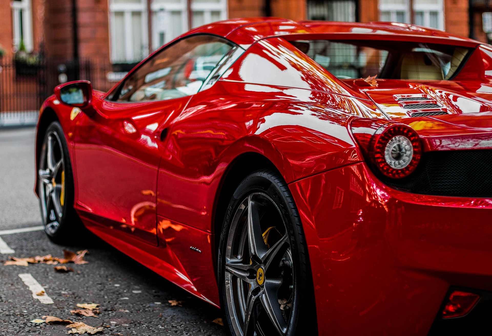

El automóvil es una máquina que consta normalmente de cuatro ruedas, un interior diseñado para los viajantes, puertas, ventanas, un capó o tapa principal, baúl o espacio donde colocar objetos, etc., por lo cual se vuelve en un elemento de cierta complejidad.
Auto de lujo
Top de Autos deportivos
22/11/21
top 10 autos del futuro
i10
vento
i8
i3
tycan
Prius
Ionic
corolla
m2
m4
Este top, es un top que nos ayuda a ver cuales son los mejores autos actualmente en el mercado, además de que nos deja tomar un decición sabia al momento de tener que escojer entre cada uno de los autos que existen en este momento
Lamborghini Aventador
Video Autos deportivos
Video de los 10 mejores autos deportivos
En este video podemos ver como los autos deportivos son en la vida real
Yo pienso que en este video podemos ver cosas muy interesantes en cuanto a autos se refiere, debido a que en este video podemos ver los 10 mejores autos deportivos actuales y sus características
Páginas web de Autos
15/12/21
Estos sitios web, son los mejores sitios web que hablan sobre los autos deportivos y el como estos son importantes en el mundo en el que vivimos, ademas de que en estas páginas, podemos aprender un poco más de lo que son los autos y hacia donde nos está conduciendo en futuro.
 La historia definitiva del surgimiento de los autos
18/02/22
La historia de los autos
Hace 134 años se revolucionó por completo el mundo automotor. Un 29 de enero de 1886 sucedió uno de los hitos más importantes de la historia de los vehículos y el principal responsable fue Carl Benz, quien registró el primer vehículo automotor de combustión interna. La solicitud fue realizada en la Oficina Imperial de Patentes, en Berlín, Alemania. Bajo el número 37.435, se registró por primera vez en la historia lo que hoy todos conocemos como un automóvil. Desde hace más de 10 años, la patente forma parte del Programa Memoria del Mundo de la Unesco, Organización de Naciones Unidas para la Educación, la Ciencia y la Cultura.
Aquel vehículo motorizado había sido puesto en funcionamiento unos meses antes, en octubre de 1885, cuando su mentor lo probaba por las calles del vecindario, tras largo tiempo de desarrollo. En la historia, fundamental fue la colaboración de Gottlieb Daimler, que en abril de ese mismo año había patentado lo que consideró como un motor de combustión de “marcha rápida”.
Fue ese impulsor el que potenció a Benz a crear sobre un carruaje de chasis tubular el primer vehículo que prescindía de tracción a sangre, reemplazándola por un motor de combustión. Sólo un asiento para dos, o eventualmente tres pasajeros, ubicado en posición elevada era el mayor lujo que poseía. Los ideales creativos de Benz hicieron que optara por un diseño con sólo tres ruedas. Para la rueda delantera empleó un sistema de dirección diferente al que utilizaban los carruajes de caballos, que le permitió obtener un logrado radio de giro. El comando tenía un formato similar al de un manubrio de bicicleta, y reemplazaba al sistema de eje con pivote.
Un ferrari desde la parte de atrás
Los memes y la realidad detrás de ellos.
04/03/22
El meme y su significado
Este es uno de los memes más graciosos que he encontrado, debido a que en este podemos ver reflejada la realidad que vivimos muchas personas en lo que al consumo de tacos se refiere.